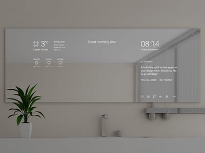
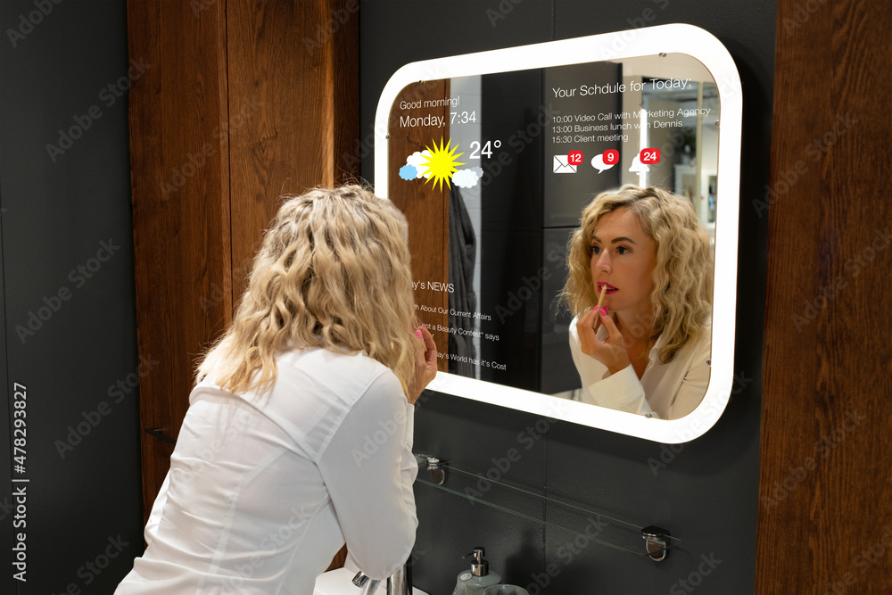
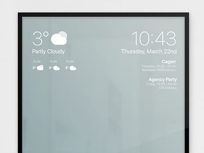
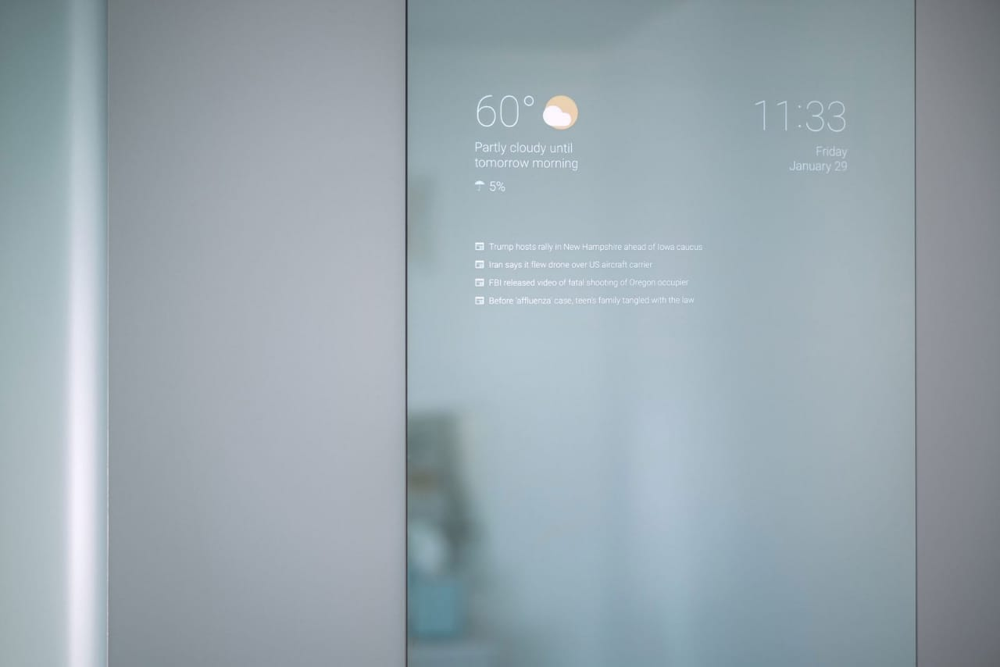
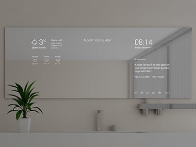
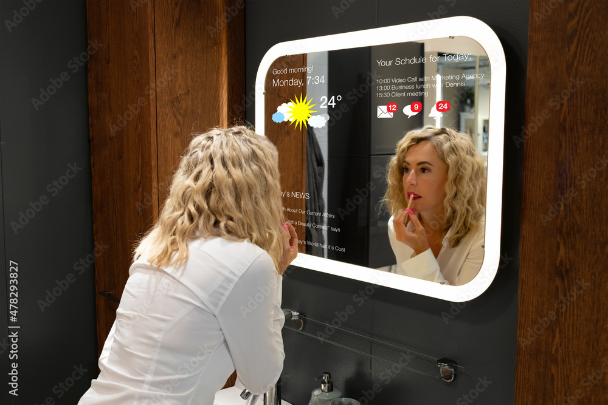
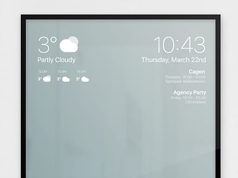
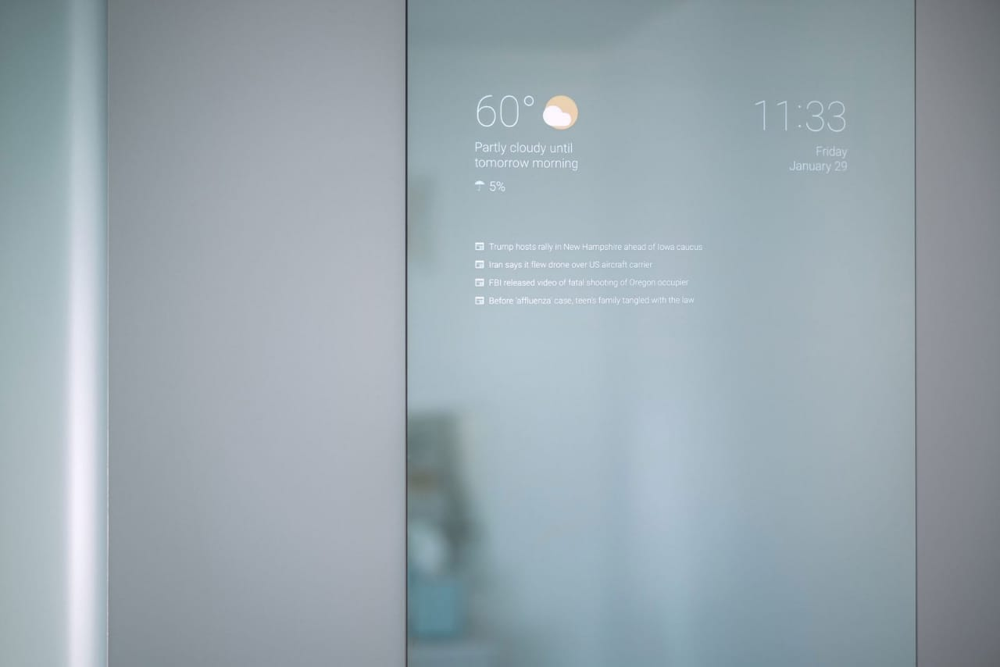

Whether in the bathroom, closet, or bedroom, chances are you probably use a mirror regularly for tasks like getting ready for the day or trying on new clothes. However, your mirror’s capabilities don’t have to stop at simply reflecting light. With a Raspberry Pi and a few other components, you can make a customizable smart mirror that projects a computer display over a traditional reflective mirror. Some possible uses include displaying the time, a calendar, picture, or other applications in your reflection. These features can help make you more productive or simply allow you to integrate more smart tools into your home. In this article, we’ll provide a broad tutorial of how you can make a smart mirror with a Raspberry Pi. As there are many different ways to build one, we won’t go over every nitty-gritty detail in the building process, just the main steps shared by most guides, directing you to additional resources along the way.